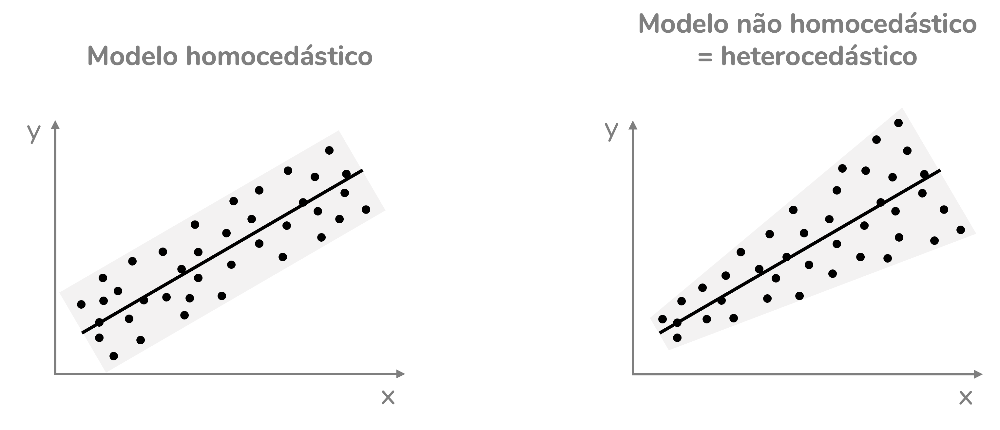
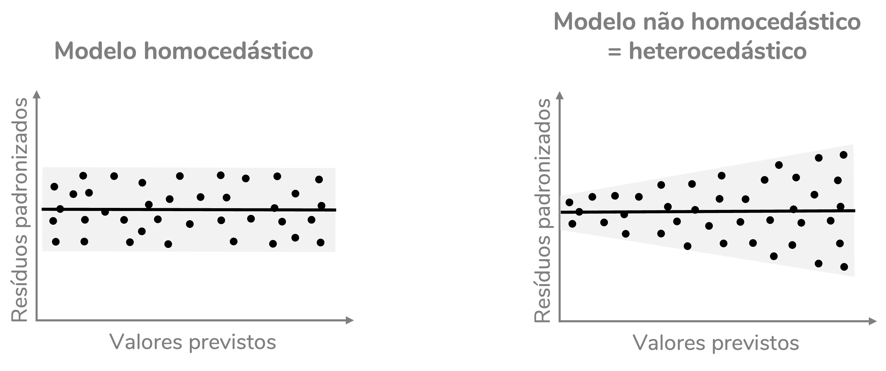
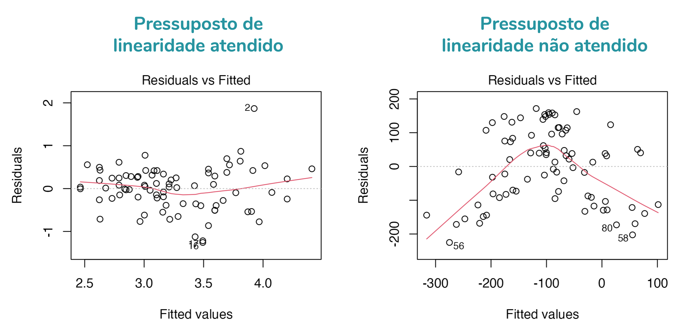
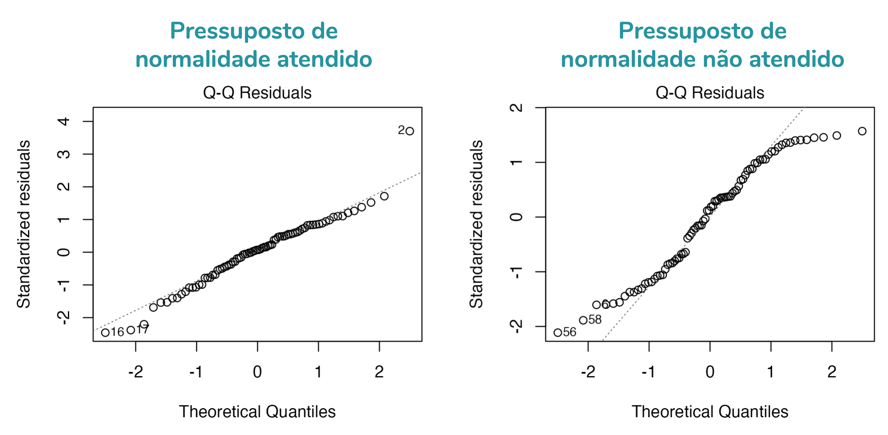
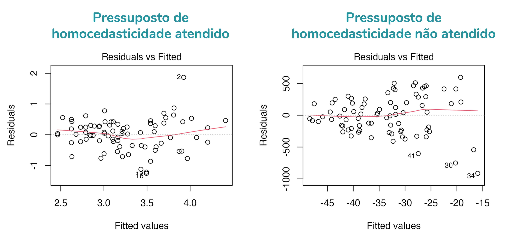
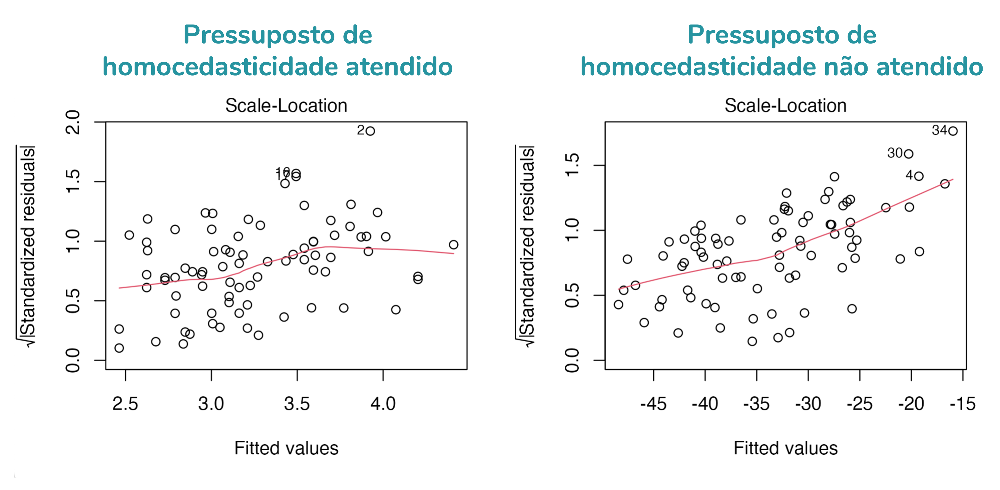
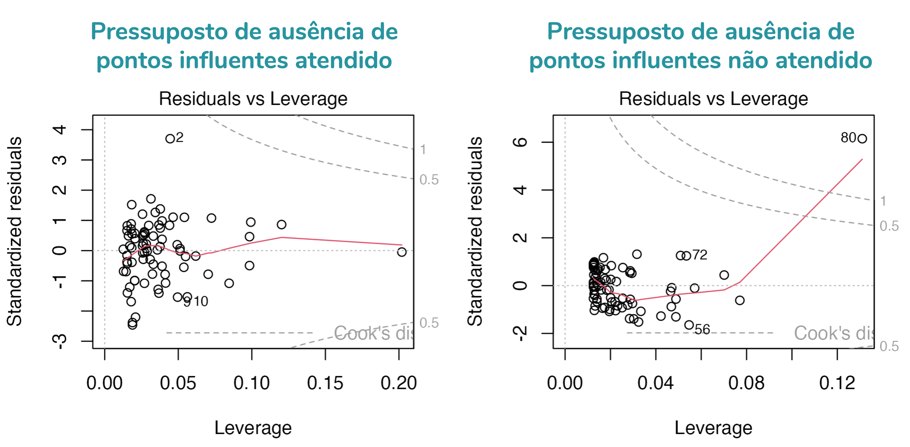

Conceitos importantes para que os gráficos façam sentido
Bom, antes de discutirmos os gráficos diagnósticos, eu preciso rever com você alguns conceitos. Lembrando que o foco desse post é te explicar os gráficos diagnósticos. Então, eu estou assumindo que você tem uma noção do que é uma regressão linear, ok?
Caso queira ler sobre a teoria por trás da regressão recomendo alguns posts do meu Instagram:
Valores previstos
Um conceito bem importante para pensarmos em gráficos diagnósticos é o conceito de valores previstos pelo modelo de regressão linear. Os valores previstos podem ser chamados também de valores ajustados. Em inglês, os termos utilizados são: predicted values ou fitted values.
Para o valor previsto fazer mais sentido, vamos partir para um exemplo. Temos uma base de dados com as seguintes informações sobre crianças e adolescentes (idades entre 11 e 18 anos):
- fev: Volume expiratório forçado, em litros. Uma medida da capacidade pulmonar.
- idade: Idade das crianças e adolescentes, em anos.
- altura: Altura das crianças e adolescentes, em centímetros.
Queremos avaliar se a idade e a altura dos jovens prevê a sua capacidade pulmonar. Para isso, vamos criar um modelo de regressão linear com fev como variável dependente e idade e altura como variáveis independentes.
dados <- read.csv2("FEV_80.csv")
mod <- lm(fev ~ altura + idade, data = dados)
summary(mod)
##
## Call:
## lm(formula = fev ~ altura + idade, data = dados)
##
## Residuals:
## Min 1Q Median 3Q Max
## -1.25713 -0.29577 0.03588 0.32060 1.86773
##
## Coefficients:
## Estimate Std. Error t value Pr(>|t|)
## (Intercept) -6.289925 1.224535 -5.137 2.05e-06 ***
## altura 0.053328 0.007675 6.948 1.04e-09 ***
## idade 0.058849 0.034127 1.724 0.0886 .
## ---
## Signif. codes: 0 '***' 0.001 '**' 0.01 '*' 0.05 '.' 0.1 ' ' 1
##
## Residual standard error: 0.5159 on 77 degrees of freedom
## Multiple R-squared: 0.4465, Adjusted R-squared: 0.4321
## F-statistic: 31.06 on 2 and 77 DF, p-value: 1.289e-10
O resultado nos indica um intercepto de -6,29 e coeficientes para altura e idade de 0,053 e 0,059, respectivamente. O modelo, portanto, resulta na seguinte equação para prever o fev:
fev = -6,29 + 0,053 x altura + 0,059 x idade
Portanto, se estamos falando de uma criança de 11 anos e 165 cm de altura, temos:
fev = -6,29 + 0,053 x altura + 0,059 x idade
fev = -6,29 + 0,053 x 165 + 0,059 x 11
fev = -6,29 + 8,745 + 0,649
fev = 3,104
Isso significa que para essa criança o modelo está prevendo um fev de 3,104 litros.
Veja os valores previstos para outros jovens da base:
fev | altura | idade | previsto |
|---|
3,500 | 157 | 17 | 3,083 |
3,428 | 163 | 14 | 3,226 |
5,793 | 175 | 15 | 3,925 |
2,976 | 166 | 13 | 3,328 |
3,082 | 161 | 12 | 3,002 |
3,058 | 154 | 12 | 2,629 |
3,403 | 157 | 12 | 2,789 |
4,073 | 174 | 12 | 3,695 |
1,916 | 154 | 12 | 2,629 |
2,606 | 165 | 11 | 3,157 |
Resíduos
Mas toda criança de 11 anos e 165 cm de altura terá esse mesmo valor de fev? Não, é claro. Haverá diferenças entre o valor observado e o valor que o modelo está prevendo. Essas diferenças recebem o nome de resíduos.
Os resíduos são a diferença entre o valor observado (o valor real, que consta na base) e o valor previsto pelo modelo de regressão.
Resíduo = Valor observado - Valor previsto
Veja os valores previstos e os resíduos para alguns jovens da base:
fev | altura | idade | previsto | residuo |
|---|
3,500 | 157 | 17 | 3,083 | 0,417 |
3,428 | 163 | 14 | 3,226 | 0,202 |
5,793 | 175 | 15 | 3,925 | 1,868 |
2,976 | 166 | 13 | 3,328 | -0,352 |
3,082 | 161 | 12 | 3,002 | 0,080 |
3,058 | 154 | 12 | 2,629 | 0,429 |
3,403 | 157 | 12 | 2,789 | 0,614 |
4,073 | 174 | 12 | 3,695 | 0,378 |
1,916 | 154 | 12 | 2,629 | -0,713 |
2,606 | 165 | 11 | 3,157 | -0,551 |
Resíduos padronizados
O resíduo está na mesma unidade de medida da variável dependente. No nosso caso, como fev está em litros, o resíduo está em litros.
É comum também calcularmos os resíduos padronizados (em inglês, standardized residuals). Esses resíduos são padronizados para terem média zero e desvio-padrão igual a 1.
fev | altura | idade | previsto | residuo | res_padronizado |
|---|
3,500 | 157 | 17 | 3,083 | 0,417 | 0,862 |
3,428 | 163 | 14 | 3,226 | 0,202 | 0,395 |
5,793 | 175 | 15 | 3,925 | 1,868 | 3,703 |
2,976 | 166 | 13 | 3,328 | -0,352 | -0,686 |
3,082 | 161 | 12 | 3,002 | 0,080 | 0,156 |
3,058 | 154 | 12 | 2,629 | 0,429 | 0,848 |
3,403 | 157 | 12 | 2,789 | 0,614 | 1,206 |
4,073 | 174 | 12 | 3,695 | 0,378 | 0,746 |
1,916 | 154 | 12 | 2,629 | -0,713 | -1,408 |
2,606 | 165 | 11 | 3,157 | -0,551 | -1,082 |
Distância de Cook
A distância de Cook é uma medida que avalia o quanto uma determinada observação influencia o modelo de regressão. Por isso, ela é uma ferramenta que nos ajuda a identificar pontos influentes.
Há vários pontos de corte sugeridos para a distância de Cook, mas uma regra bem usada (e implementada em um dos gráficos diagnósticos do R) é: pontos com distância de Cook acima de 1 são influentes; pontos com distância de Cook acima de 0,5 já devem ser avaliados com atenção.
Mas, há outras sugestões de ponto de corte. Um dos pontos de corte sugeridos é 4/n. Ou seja, em um modelo com 80 observações, teremos:
4/80 = 0,05
Isso significa que observações com distância de Cook acima de 0,05 já seriam observações potencialmente influentes.
Pressupostos do modelo de regressão linear
Ok, relembramos os conceitos importantes. Agora, vamos rever os pressupostos do modelo de regressão linear:
1. Linearidade
O modelo de regressão linear assume que há uma relação linear entre a variável dependente e quaisquer variáveis independentes numéricas.
2. Normalidade dos resíduos
Os resíduos do modelo de regressão linear devem apresentar distribuição normal. Podemos avaliar esse pressuposto com um teste estatístico, como o Shapiro-Wilk, ou com um gráfico, como o Q-Q plot, que usaremos aqui.
3. Homocedasticidade
Homocedasticidade é um nome bonito (ok, talvez não tão bonito) para homogeneidade de variâncias. Para que o modelo de regressão seja válido, ele deve errar de forma semelhante ao prever valores mais baixos e mais altos. Para um modelo com uma única variável independente numérica, isso significa que quando plotamos um gráfico com a variável dependente no eixo y e a independente no eixo x, os pontos devem apresentar um padrão de distribuição retangular – não triangular, em formato de gravata, etc. Ou seja: o espalhamento dos pontos ao redor da reta deve ser semelhante ao longo de toda a reta.

Essa inspeção visual acima só funciona quando temos apenas uma variável independente. Quando temos mais de uma, um gráfico adequado para analisar essa relação é um que traz os resíduos no eixo y e os valores previstos no eixo x. De novo, esperamos um padrão retangular na distribuição dos dados.

4. Ausência de pontos influentes
Pontos influentes são aqueles que influenciam de forma significativa o modelo de regressão, podendo distorcer seus coeficientes. Como discutimos, uma boa forma de avaliar essa influência é pela distância de Cook. Temos um gráfico diagnóstico para ela.
5. Ausência de multicolinearidade
Multicolinearidade corresponde a uma alta correlação entre variáveis independentes. A presença de multicolinearidade leva a distorções nos coeficientes do modelo de regressão e nos seus valores de p. Por isso, é fundamental que não haja multicolinearidade no modelo.
Avaliamos a multicolinearidade pelo cálculo do Fator de Inflação da Variância (VIF, do inglês Variance Inflation Factor). Como a multicolinearidade não é avaliada por gráficos diagnósticos, ela não será abordada nesse post. Mas posso fazer um post específico sobre ela. Me conta se tiver interesse, combinado?
6. Erros independentes
Um outro pressuposto do modelo de regressão é a independência dos erros, que podemos simplificar como independência dos resíduos. Isso significa que o resíduo de uma observação não deve apresentar correlação com o resíduo de uma outra observação (linha da base). Essa correlação é muito comum em dados de medidas repetidas, quando um mesmo sujeito é avaliado diversas vezes – e, portanto, várias linhas da base correspondem a dados que vieram de um mesmo sujeito.
A independência dos resíduos pode ser avaliada por um teste, chamado Durbin-Watson. No entanto, há quem argumente que esse pressuposto deve ser testado apenas em bases de dados longitudinais – isso é, com medidas repetidas.
“A hipótese de aleatoriedade e independência dos termos de erro apenas faz sentido de ser estudada em modelos em que há a evolução temporal dos dados. Em outras palavras, se estivermos trabalhando com uma base de dados em cross-section, este pressuposto não se justifica (…)”
FÁVERO, Luiz Paulo; BELFIORE, Patrícia. Manual de análise de dados: estatística e modelagem multivariada com Excel®, SPSS® e Stata®. Elsevier Brasil, 2017.
Como esse pressuposto não é avaliado pelos gráficos diagnósticos do R – e nem faria sentido para a nossa base, que não traz medidas repetidas – não vamos discuti-lo aqui.
Gráficos diagnósticos
Quando criamos um modelo de regressão no R, podemos usar a função plot() para acessar seus gráficos diagnósticos. O R mostrará um gráfico por vez. Para ver em uma única figura os quatro principais gráficos diagnósticos, devemos rodar antes a função par(mfrow = c(2,2)):
par(mfrow = c(2,2))
plot(mod)
par(mfrow = c(1,1))

Vamos, então, discutir cada um desses gráficos em detalhes.
Gráfico 1. Avaliação da linearidade
O primeiro gráfico mostra a relação entre os resíduos (eixo y) e os valores previstos (eixo x). Ele também traz uma linha de tendência em vermelho e uma linha horizontal pontilhada em zero.
Caso a gente queira acessar apenas esse gráfico, podemos usar a função plot com o argumento which = 1:
plot(mod, which = 1)

Esse gráfico nos permite avaliar o pressuposto de linearidade. Caso esse pressuposto seja atendido, os pontos devem apresentar uma linha de tendência (em vermelho) aproximadamente horizontal.
O gráfico à esquerda da figura abaixo mostra um modelo com o pressuposto de linearidade atendido. Já o gráfico da direita, mostra um modelo que não atendeu a esse pressuposto. Veja como a linha de tendência do gráfico à direita forma uma parábola – ou seja, não é horizontal.

Gráfico 2. Avaliação da normalidade
O segundo gráfico é um Q-Q plot: mostra a relação entre os resíduos padronizados (eixo y) e os quantis teóricos (eixo x). Esses quantis correspondem aos valores que seriam esperados caso os resíduos seguissem a distribuição normal. Ele também traz uma linha de referência (pontilhada) na diagonal.
Caso a gente queira acessar apenas esse gráfico, podemos usar a função plot com o argumento which = 2:
plot(mod, which = 2)

Esse gráfico nos permite avaliar o pressuposto de normalidade dos resíduos. Caso esse pressuposto seja atendido, os pontos devem estar sobrepostos à linha diagonal – ou, pelo menos, bem próximos a ela.
O gráfico à esquerda da figura abaixo mostra um modelo com o pressuposto de normalidade atendido – veja que os pontos estão próximos à linha diagonal. Já o gráfico da direita, mostra um modelo que não atendeu a esse pressuposto: note como os pontos se distanciam bastante dessa linha, principalmente em quantis baixos e altos (esquerda e direita do gráfico).

E como você já deve ter percebido: sim, essa é uma avaliação bem subjetiva. Faz parte.
Gráfico 3. Homocedasticidade
A homocedasticidade pode ser avaliada pelo gráfico 1, que discutimos anteriormente. Ao avaliarmos o gráfico 1, consideramos que os dados apresentam homocedasticidade quando o padrão de distribuição dos pontos é retangular. Caso esse padrão seja triangular, ou em formato de gravata, temos dados heterocedásticos (= não-homocedásticos). Perceba como os pontos do gráfico à direita seguem um padrão triangular, mas os da esquerda, não:

Mas o gráfico 3 é ainda melhor para avaliarmos homocedasticidade. Esse gráfico mostra a relação entre a raiz quadrada do valor absoluto dos resíduos padronizados (eixo y) e os valores previstos (eixo x). Caso a gente queira acessar apenas esse gráfico, podemos usar a função plot com o argumento which = 3:
plot(mod, which = 3)

Como esse gráfico mostra a raiz quadrada dos resíduos em módulo, ele traz apenas resíduos positivos. Isso nos ajuda a enxergar o padrão de distribuição desses resíduos. Caso a variação seja constante ao longo dos valores previstos, a linha de tendência desse gráfico será aproximadamente horizontal. Modelos heterocedásticos terão gráficos com linhas de tendência inclinadas.
O gráfico à esquerda da figura abaixo mostra um modelo com o pressuposto de homocedasticidade atendido – veja que a linha de tendência é aproximadamente horizontal. Já o gráfico da direita, mostra um modelo que não atendeu a esse pressuposto: note como a linha de tendência está inclinada, ela sobe ao longo do gráfico.

Gráfico 4. Pontos influentes
O quarto gráfico mostra a relação entre os resíduos padronizados (eixo y) e a alavancagem (eixo x). A alavancagem reflete o quanto um ponto se distancia dos demais em relação aos valores das variáveis independentes. Esse gráfico também traz linha pontilhadas que indicam as distâncias de Cook 0,5 e 1 (por padrão).
Caso a gente queira acessar apenas esse gráfico, podemos usar a função plot com o argumento which = 5:
plot(mod, which = 5)

Se quisermos alterar os valores de distância de Cook representados no gráfico, podemos adicionar o argumento cook.levels. No exemplo, pedi para que fossem plotados os valores 0,05 e 0,5.
plot(mod, which = 5, cook.levels = c(0.05, 0.5))

Esse gráfico nos permite avaliar o pressuposto de ausência de pontos influentes. Caso esse pressuposto seja atendido, os pontos não devem ultrapassar a linha pontilhada. O gráfico à esquerda da figura abaixo mostra um modelo com o pressuposto de ausência de pontos influentes atendido. Já o gráfico da direita, mostra um modelo que não atendeu a esse pressuposto: note como há um ponto (a 80ª pessoa da base) que tem distância de Cook superior a 1.

Como citar esse post, nas normas da ABNT
PERES, Fernanda F. Gráficos diagnósticos: Avaliando os pressupostos da regressão linear. Blog Fernanda Peres, São Paulo, 14 jul. 2025. Disponível em: https://fernandafperes.com.br/blog/graficos-diagnosticos-lm/.